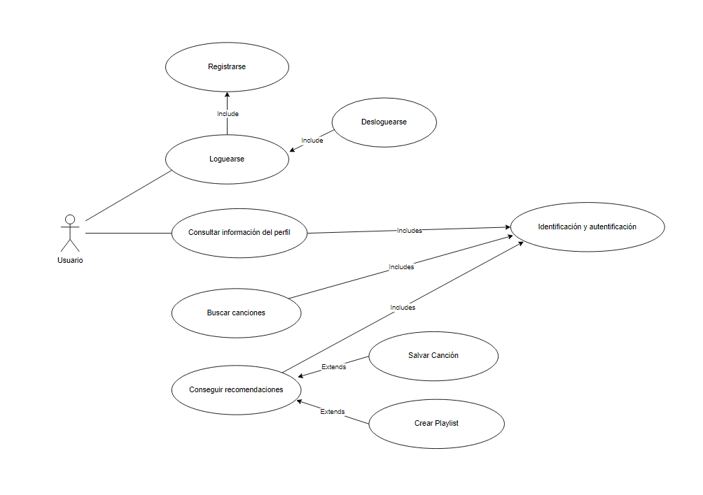
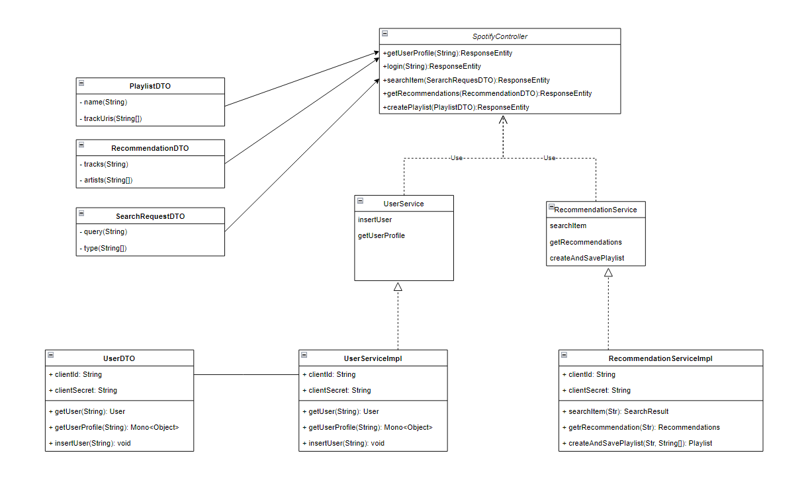
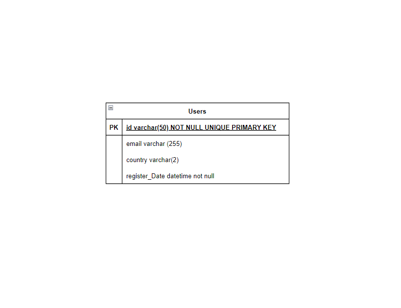
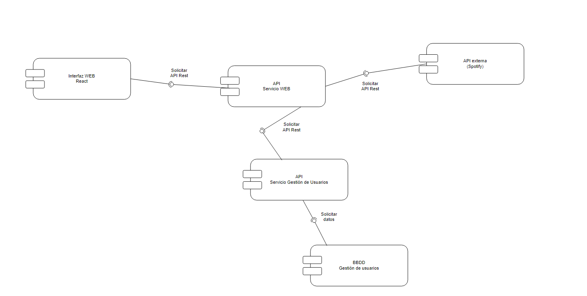
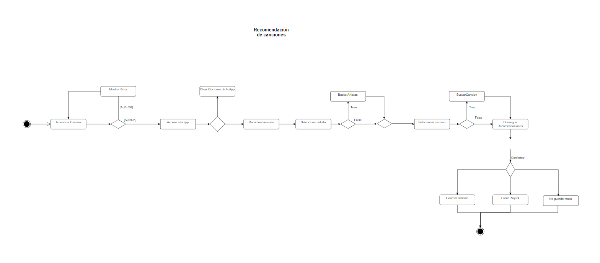
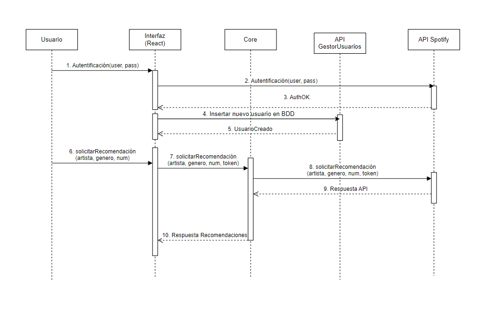
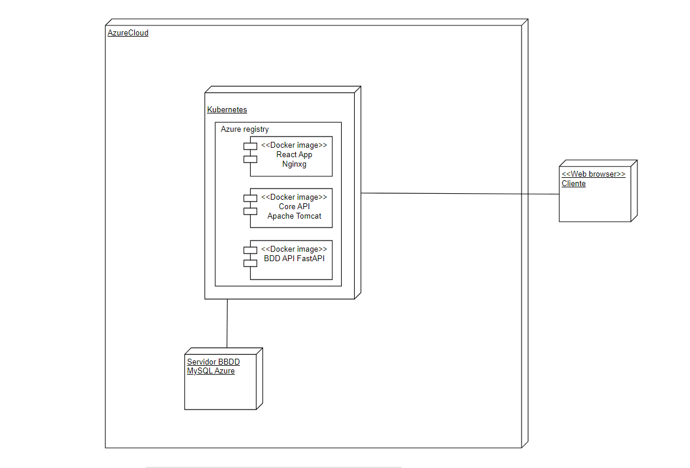

ineednewmusic - TFG
María Sisamón Márquez. DAW Vedruna Sevilla
Explicación del Proyecto
Esta aplicación basada en microservicios permite a los usuarios buscar canciones o artistas en Spotify, seleccionar hasta 5 elementos y generar una playlist basada en esas elecciones, que luego pueden guardar directamente en su cuenta de Spotify. Se compone de tres partes, el front con react, el core con java spring y una api desarrollada en python que se conecta con la base de datos de Azure MySQL.
Diagrama de Casos de Uso
Representa las interacciones entre los usuarios y el sistema, destacando los casos de uso.
Diagrama de Clases
Muestra la estructura estática del sistema, incluyendo clases, atributos, métodos y relaciones.
Diagrama Entidad-Relación
Visualiza las entidades del sistema y sus relaciones, utilizado en el modelado de bases de datos.
Diagrama de Componentes
Descompone el sistema en componentes y muestra sus dependencias y relaciones.
Diagrama de Actividades
Ilustra el flujo de trabajo o actividades dentro de un sistema o proceso.
Diagrama de Secuencia
Describe cómo los objetos interactúan en un orden específico, mostrando mensajes intercambiados.
Diagrama de Despliegue
Detalla la distribución física de los componentes del sistema en nodos de hardware.
Casos de Prueba
Login con Spotify
Inserción en la base de datos
Creación correcta de la playlist y guardado en Spotify